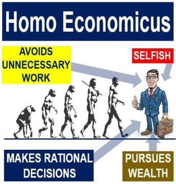
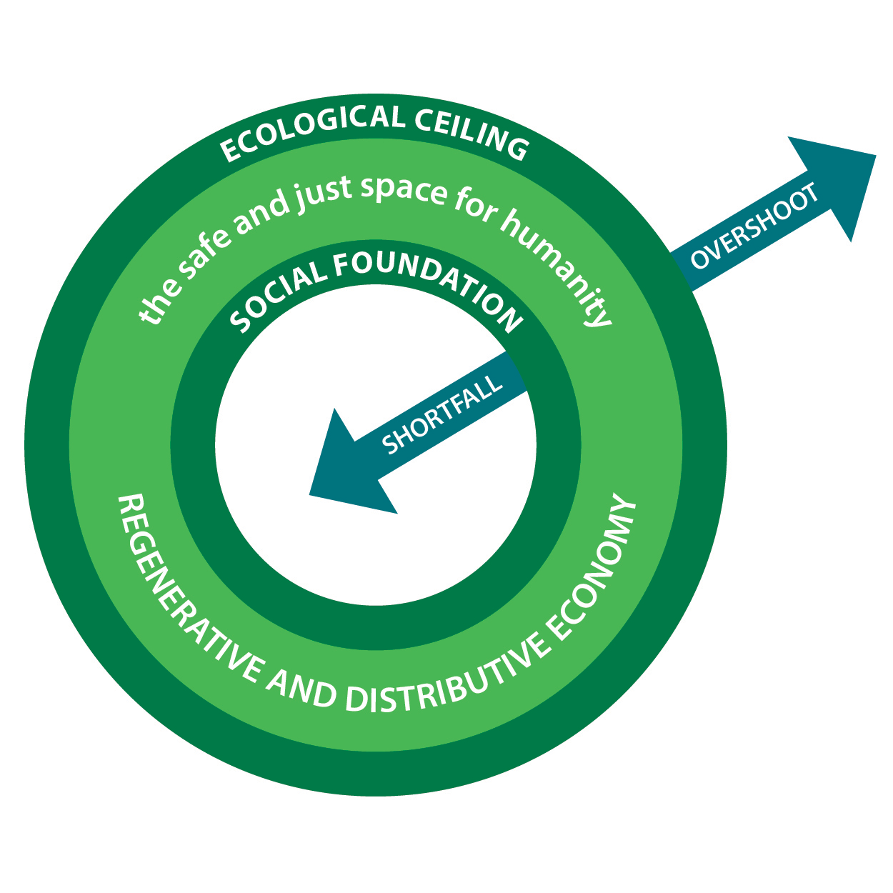
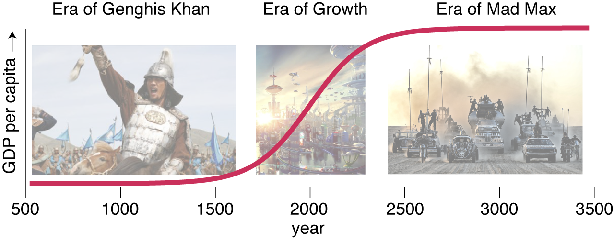
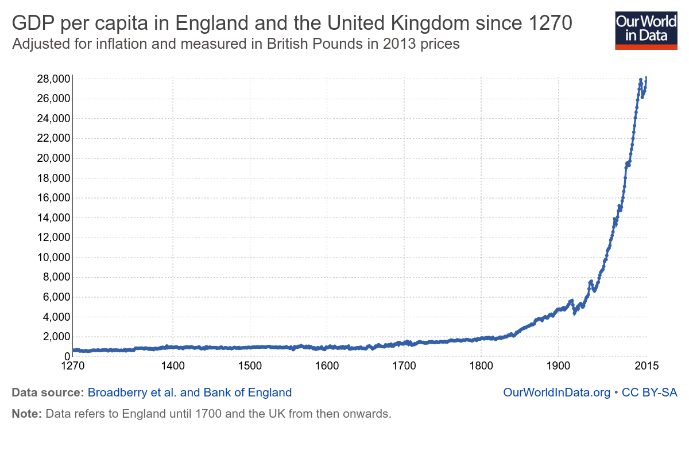

Book Response: Doughnut Economics
I recently finished Doughnut Economics by Kate Raworth and I have very mixed feelings. Essentially, the book attacks modern economic theory on the grounds of making unrealistic oversimplifications that have disastrous consequences for the explanatory power of economics (I agree with most of this) and proposes a new framework for economic theory based on the dual goals of environmental protection and a minimum standard of human living (I disagree that most of the methods proposed to achieve these goals are feasible).
Why Economic Theory is Flawed
In my mind, the first idea of the book, attacking modern economic theory’s oversimplifications, is spot on in most regards. The idea of humans as rational, utility-maximizing entities that act predictably and consistently throughout time has been more or less thoroughly debunked by behavioral economics and Kahneman and Tversky’s work. The common response by economists is that the model is obviously a simplification, but that does not mean we shouldn’t use it. Since we have nothing better to use, economics is still useful.
Here I agree with Raworth. Just because making dramatic oversimplifications makes the math pretty does not mean that we should accept economics flaws and all. To loosely quote Nassim Taleb, measuring a table with an untrustworthy ruler measures the ruler as much as the table. As the 2008 financial crisis most recently demonstrated, making decisions about the length of a table based on an untrustworthy ruler can be worse than useless: sometimes it is better to admit we do not know what we are doing than make decisions on the basis of misinterpreted data.
Doughnut Economics
As a solution to the shortcomings of neoclassical economics, Doughnut Economics proposes a new model that should guide economic policymaking: a donut shape where the ideal range of economies lies in an area that ensures the basic needs of every human are met while ensuring humanity does not compromise the health and well-being of the environment. A core component of this economic rethinking is systems theory, which shifts focus from achieving equilibrium and long-term economic growth. Rather, systems theory sees the economy as a complex, non-linear system full of feedback loops; in such a system, small changes can have large effects.
To put the issue into its political context, Doughnut Economics essentially advocates for changing the focus, discourse, and diagrams of economics to promote a leftist political and economic agenda. The two primary goals, environmental preservation and meeting basic human needs, are prima facie good ideas: the issue I take with the book is that the proposed solutions seem overly idealistic and reject the idea of long-term economic growth.
Growth Agnosticism
Raworth comes right out and admits that long-term economic growth is both unlikely to be possible and unlikely to be environmentally sustainable. Instead, author views economic growth as a logistic function bounded by the carrying capacity of the Earth and suggests that nations and businesses need to become “growth agnostic” to handle the inevitable slowing and cessation of growth.
Growth agnosticism involves maintaining a “thriving” economy even when the size of the economy does not grow, measured by GDP or some similar measure of economic output. A growth agnostic society would stop caring so much about metrics such as GDP growth, focusing instead on using the available level of economic output to its maximum social benefit. I take two objections to growth agnosticism: first, the mindset shift is impractical because growth-thinking is too entrenched; second, focusing on growth is not intrinsically bad and can actually have positive effects without environmental degradation.
Making the argument that growth thinking is too entrenched to be overturned is not very difficult. Every copy of The Economist prominently features growth tables; political leaders attribute economic health to GDP growth rate; the stock price for a corporation can go down despite revenue growth if the revenue growth is less than expected; and, perhaps most importantly, the consumerist culture prevalent in modern market economies reinforces individual consumptive patterns that pressure individuals to increase their wealth over time and focus on relative levels of wealth compared to their peers rather than absolute levels of wealth compared to historical norms.
The prevalence of growth thinking implies that supplanting this mindset with growth agnosticism will be difficult if not impossible. Growth thinking pervades in all levels of the economy, from the nation-state to publicly traded companies to venture funding. The rise of cashflow-negative startups securing venture funding on the promise of future revenue based on user-base growth underscores the modern growth infatuation; now may be historically one of the worst times to attempt a shift away from growth-based economic development.
In Defense of Growth
I think it is very difficult to take an anti-growth stance without affirming the idea that our current level of progress is both the maximum achievable level of progress and good enough that we should stop trying to improve. There are two arguments to be made here in defense of growth: first, growth is intrinsically required to maintain a healthy economy; even if that growth destroys the environment, humans are not capable of giving it up. Second, there is reason to believe that we can continue to achieve growth without harming the environment.
To support the idea that growth is a non-optional component of a healthy economy, it is important to think about the way that decisions made by a nation-state (such as being growth agnostic or growth focused) affect and influence the citizens and corporations of that nation-state. At the individual level, a decision made by the nation-state to stop actively trying to achieve economic growth is a signal that personal growth (economically, at least) is discouraged. This runs counter to the stereotypical “American dream” of achieving personal wealth through hard work; regardless of whether or not the American dream is achievable or a good goal to aim for, it is unarguably a powerful motivating force in American society. I believe that growth is actually the primary post-material concern: once humans have their basic needs met, the focus shifts to self-improvement and advancement in society.
The idea of striving towards a goal is fundamental to human nature and not the product of a market economy system that encourages competition. The evidence for this statement is apparent historically in different religions and philosophies. Stoicism and Buddhism both prioritize a form of self-improvement as the ultimate goal in life; it can be argued that Christianity, Judaism, and Islam focus on a similar goal of being the best person you can be. When society no longer prioritizes expansion and growth, it is doing so at the risk of running counter to thousands of years of human value systems developed through religion and philosophy, and potentially hundreds of thousands of years of human evolution rewarding goal achievement. Of course, humans can pursue growth outside of the economic realm, but removing economic growth as a goal of society severely limits the individual’s ability to improve in non-economic aspects as well.
Shifting away from a growth focus similarly calls into question the fundamental goal of business. Modern businesses essentially have one overriding goal: creating shareholder profit. This goal is moderated by social concerns and legal structures – slavery may be economical but it is (generally) not practiced today due to these concerns. Doughnut Economics attacks this issue by discussing a low-return investment structure where a company shares a fixed percentage of income with shareholders rather than issuing dividends or stock repurchases; due to the limited success and instance of this model, I am skeptical that the entire concept of equity ownership and business can be reformulated into a growth agnostic structure.
Green Growth
Growth is thus a non-optional component of a healthy economy: even if growth comes at the cost of harming the environment, that is a cost we have to bear because we are incapable of eliminating our dependence on growth. The choice between growth and sustainability, however, is a false dichotomy: it is possible to achieve economic growth without sacrificing the stability of the environment.
Doughnut Economics poses the question directly by asking whether it is possible to achieve “green growth.” The conclusion reached is that growth cannot continue indefinitely because the Earth imposes natural limitations to the size of an economy – this is the idea of economic growth as a logistic function mentioned previously. At first brush, this idea seems very intuitive and fundamentally true: it does appear that factors such as sea level rise and resource depletion pose natural checks on economic growth.
Upon further inspection, however, these claims are simply well-disguised neo-Malthusianism. The neo-Malthusian view is generally applied to population: the argument goes that an exponentially growing population will eventually outstrip the pace of food production, resulting in calamity. The solution is population control – slowing or halting population growth so that the food supply is sufficient. Raworth’s claims are similar: an exponentially growing economy will eventually outstrip the resources of the Earth, resulting in calamity. The solution is to accept slowing or halting economic growth so that the supply of natural resources is sufficient.
The problem with the neo-Malthusian thesis is that it rejects the ability of technological progress to address resource utilization concerns. With food, humans developed technologies to more efficiently utilize crop land, fertilizer, and sunlight, allowing for a dramatic increase in the food supply. With modern ecological problems, there is no reason to believe that humans cannot develop technologies to more efficiently sequester carbon, produce without emissions, and control utilization of non-renewable resources.
The Path Forward
It is important to keep in mind that both claims – technological growth can result in sustainable economic growth, and sustainable economic growth is impossible – are speculative. There can be no concrete answer to either question on the basis of data available today. Thus, the important question is the following: how should we orient society? Should we adopt growth agnosticism, under the assumption that sustainable growth is impossible? Or, should we keep pursuing growth, under the assumption that technological development will solve the problem of sustainability?
To me it seems that the first path, adopting growth agnosticism, is giving up on the idea of progress. I don’t think that this is a good decision because it admits that things can no longer improve, which condemns people currently living below the standard they want to never see a better future. I also don’t think that this is even an option, because growth is so entrenched in our mindset. It seems that the only path forward is the latter: keep pursuing growth despite environmental concerns. The primary consideration then becomes how to achieve growth sustainably, developing technologies that utilize resources even more efficiently and produce less waste, perhaps even sequestering or reusing existing waste. That is not an easy question and it will be the subject of a different post.